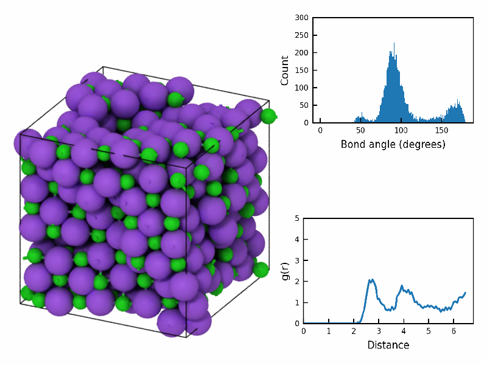
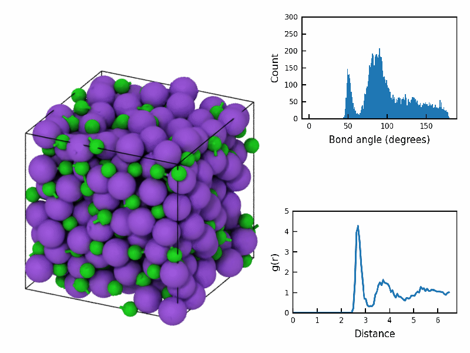

![]()
%%capture
! pip install -U ovitoRecipe 2: Plotting RDF and BAD with rendered scene
How to Script with OVITO

Frequently you’ll want to know what the distribution is of structural quantities. For example you may want to know where the average first nearest neighbor is or the bond-angle formed by a pair os nearest neighbors. This reciepe will allow you to 1.) perform the analysis, 2.) add the plots to the rendered scene.
Import OVITO modules and Matplotlib
from ovito.io import import_file
from ovito.modifiers import CreateBondsModifier, BondAnalysisModifier, CoordinationAnalysisModifier
from ovito.vis import Viewport, PythonViewportOverlay
from ovito.vis import ViewportOverlayInterface
from ovito.vis import TachyonRenderer, OSPRayRenderer, OpenGLRenderer
from PySide6.QtGui import QImage, QPainter
import numpy as np
import matplotlib.pyplot as plt
import matplotlib.ticker as tickerStep 1: Download LAMMPS dump and create OVITO pipeline
As usually load your file into a OVITO pipeline and the nadd it to scene.
%%capture
! wget 'https://drive.google.com/uc?id=1GZS1AOqJHYe4TVgqfkWR1YbRdYrPBPqB&export=download' -O dump.nacl-melt
pipeline = import_file('dump.nacl-melt')
pipeline.add_to_scene()Step 2: Functions for BAD and RDF
Plotting using matplotlib is handled as normal python code. The main thing is using the OVITO calculated data (see below). Here we define the matplotlib plotting functions for the radial distribution function (RDF) and the bond-angle distribution (BAD). These will get used by the Overlay class.
Tip
Note, that if you know something about the range of values for the y and x axis, you would modify that here, so that during animations the “flickering” of the plots is limited. I haven’t done so here.
def plot_bond_angle_distribution(data):
plt.figure(figsize=(5/2,3.5/2))
plt.bar(data[:,0], data[:,1], width=data[1,0]-data[0,0], align='center')
plt.xlabel('Bond angle (degrees)', fontsize=8)
plt.ylabel('Count', fontsize=8)
ax = plt.gca()
ax.tick_params(axis='both', which='major', labelsize=6, direction='in')
ax.set_ylim(0.0,300)
ax.xaxis.set_major_locator(ticker.AutoLocator())
ax.yaxis.set_major_locator(ticker.AutoLocator())
plt.tight_layout()
plt.savefig('bond_angle_plot.png', dpi=300, transparent=True)
plt.close()
def plot_radial_distribution_function(data):
plt.figure(figsize=(5/2, 3.5/2))
plt.plot(data[:,0], data[:,1])
plt.xlabel('Distance', fontsize=8)
plt.ylabel('g(r)', fontsize=8)
ax = plt.gca()
ax.tick_params(axis='both', which='major', labelsize=6, direction='in')
ax.set_xlim(0.0,None)
ax.set_ylim(0.0,5.0)
plt.tight_layout()
plt.savefig('rdf_plot.png', dpi=300, transparent=True)
plt.close()Step 3: Class for Viewport Overlay of RDF and BAD plots
Now we define a Overlay class that has a method called render. This gets called when a Viewport object is rendered.
Notice that we have our pipeline.compute here, so all the modifiers that are set in a pipelien get called. We also cal our plotting functions and then open a canvas to add the plots to the scene.
class Overlay(ViewportOverlayInterface):
def render(self, canvas, **kwargs):
frame = kwargs['frame']
data = pipeline.compute(frame=frame)
plot_radial_distribution_function(data.tables['coordination-rdf'].xy())
plot_bond_angle_distribution(data.tables['bond-angle-distr'].xy())
with canvas.qt_painter() as painter:
bond_angle_image = QImage('bond_angle_plot.png')
rdf_image = QImage('rdf_plot.png')
# Define the position and size of the images on the canvas
bond_angle_pos = (1.0, 1.0) # right-top corner
rdf_pos = (1.0, 0.0) # right-bottom corner
size = (0.45, 0.45) # fractional coordinates
canvas.draw_image(bond_angle_image, pos=bond_angle_pos, size=size, anchor="north east")
canvas.draw_image(rdf_image, pos=rdf_pos, size=size, anchor="south east")Step 4: OVITO Modifiers
OVITO modifiers are analysis or property calculation/setting routines. For anything you want to do, in terms of analyzing your data from a atomistic simulation, you will use a modifier which is appended to the pipeline via pipeline.modifiers.append(...). Here the modifiers we use are the BondAnalysisModifier and CoordinationAnalysisModifier to grab the data for plotting the BAD and RDF.
# Create bonds if not already in the dump
pipeline.modifiers.append(CreateBondsModifier(cutoff=3.5))
# Calculate the bond-angle distribution
bond_angle_modifier = BondAnalysisModifier()
pipeline.modifiers.append(bond_angle_modifier)
# Calculate the radial distribution function
rdf_modifier = CoordinationAnalysisModifier(cutoff=6.5, number_of_bins=100)
pipeline.modifiers.append(rdf_modifier)Step 5: Viewport and Render
As usually we need to create our Viewport object and then configure it based on how we want to view the scene.
Then because we are overlaying additional images that have been created by matplotlib we need to provide our overlay object to the viewport. Then we add the pipeline to the scene.
viewport = Viewport(type=Viewport.Type.Ortho, camera_dir=(2, 1, -1))
viewport.zoom_all()
viewport.camera_pos = [15, -1, 15]
overlay = PythonViewportOverlay(delegate=Overlay())
viewport.overlays.append(overlay)
pipeline.add_to_scene();
Note
We just use the code below to display an image in a notebook.
from IPython.display import ImageRender Single Frame
# Render image
frame=9
fstatic = f'nacl_melt_rendered_frame_{frame}.png'
viewport.render_image(size=(800, 600),
frame=frame,
filename=fstatic,
renderer=OSPRayRenderer());Image(open(fstatic, 'rb').read())

Animation
fanim = 'nacl_melt_animation.gif'
viewport.render_anim(size=(800, 600),
every_nth=5,
filename=fanim,
renderer=OSPRayRenderer(),
fps=10)

Citation
BibTeX citation:
@online{bringuier2024,
author = {Bringuier, Stefan},
publisher = {Github Pages},
title = {Recipe 2: {Plotting} {RDF} and {BAD} with Rendered Scene},
date = {2024-02-22},
url = {https://stefanbringuier.github.io/HowToSOVITO},
langid = {en}
}